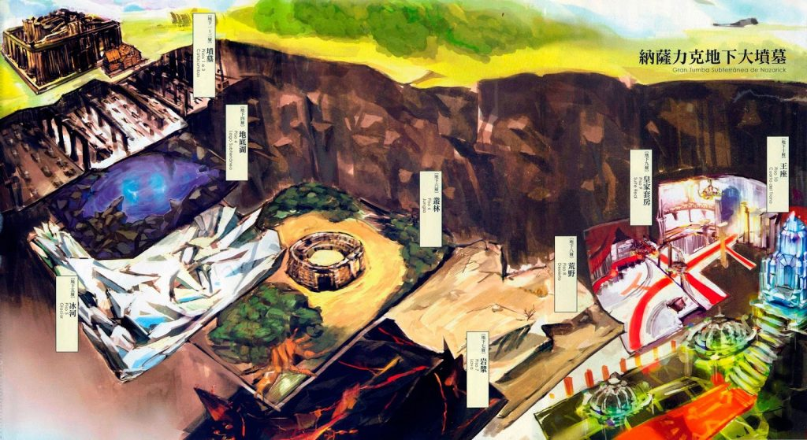

Volumen 1: El Rey No-Muerto
Capítulo 1: El Final y el Inicio
Parte 2
Momonga dejó el cuarto llamado la Mesa Redonda.
Cualquier miembro del gremio usando un anillo del gremio podía entrar automáticamente en ese cuarto a menos que hubiese circunstancias especiales. Si algún otro miembro regresara, definitivamente aparecería ahí. Sin embargo, Momonga sabía bien que los otros miembros ya no regresarían. En los últimos momentos de la Gran Tumba Subterránea de Nazarick, sólo quedaba Momonga.
Reprimiendo sus turbulentas emociones, Momonga entró silenciosamente por un gran hall. Lo recibió un mundo de grandeza y esplendor que recordaba a un castillo gigante cubierto en mármol.
Colgando del alto techo, separados igualmente se podían ver varios candelabros que emitían un brillo suave y cálido. El lustroso piso del ancho corredor reflejaba la luz de los candelabros sobre él, brillando luminosamente como un mosaico de brillantes estrellas. Si las puertas a lo largo de los corredores se abrieran, los lujosos muebles dentro de los cuartos atraerían los ojos de muchos.
Si los jugadores que habían escuchado el nombre de Nazarick llegaran aquí, se abrían quedado anonadados por el hecho de que tan hermosos lugares pudieran existir en un lugar como este lugar conocido por su infamia.
Después de todo, la Gran Tumba Subterránea de Nazarick venció a la mayor ofensiva militar organizada por jugadores en toda la historia del servidor. Una alianza de ocho gremios, afiliados a los gremios, jugadores y NPC mercenarios, que sumaban un total de mil quinientas personas, trató de atacar este lugar y fueron aniquilados. Ese evento convirtió a Nazarick en una leyenda.
La Gran Tumba Subterránea de Nazarick anteriormente tenía 6 pisos, pero sufrió una reconstrucción
mayor luego de ser ocupada por Ainz Ooal Gown. Ahora se extendía sobre 10 pisos, cada uno con sus propias características.

Piso 1-3 Catacumbas
Piso 4 Lago Subterráneo
Piso 5 Glaciar
Piso 6 Jungla
Piso 7 Lava
Piso 8 Desierto
Piso 9 Suite Real
Piso 10 Cuarto del Trono
Los últimos dos pisos eran la base de Ainz Ooa1 Gown, uno de los 10 gremios más poderosos en Yggdrasil.
Los pasos de Momonga hicieron eco en el pasaje a la Suite Real, seguidos por el sonido de su Báculo al golpear con el suelo. Luego de voltear unas cuantas veces alrededor de las esquinas del ancho vestíbulo, Momonga vio una mujer caminando hacia él en la distancia.
Ella tenía una exquisita cabellera rubia que le llegaba a los hombros y características bien definidas.
Vestía un atuendo de sirvienta, incluyendo un delantal y una falda larga. Tenía una altura de 170 centímetros aproximadamente. Tenía un cuerpo delgado, con unos pechos grandes que amenazaban por desparramarse fuera de sus ropas. En conjunto, daba una impresión de virtuosismo y elegancia.
Cuando estaban cerca el uno al otro, la sirvienta dio un paso al costado y se inclinó profundamente en una reverencia hacía Momonga. Como respuesta, el levantó su mano.
La expresión de la sirvienta no cambió. Su cara mostraba la misma seriedad de antes. Las expresiones faciales no cambiaban en Yggdrasil. Sin embargo, había una diferencia entre la inmutable expresión de los jugadores y la de esta sirvienta. La sirvienta era un Personaje No Jugador (NPC en inglés). Dentro del juego, estas inteligencias artificiales sólo actuaban de acuerdo a su programación. En otras palabras, eran lo mismo que maniquíes móviles, e incluso su saludo anterior hacia Momonga era sólo una acción pre-programada.
El saludo de Momonga podría haber sido visto como una pérdida de tiempo, pero Momonga tenía una razón por la que no podía tratarlos de forma irrespetuosa.
Todas las 41 sirvientas NPCs que trabajaban en la Gran Tumba Subterránea de Nazarick estaban basadas en diferentes ilustraciones hechas por un miembro del gremio, que había vivido de sus ilustraciones y que ahora era un artista de manga publicado en un magazine mensual.
Momonga miraba no solo la apariencia de la sirvienta, sino también a lo asombrosamente elaborado de su uniforme. Especialmente, el exquisito bordado en el delantal era materia de admiración.
Como fue ilustrado por una persona que alardeaba diciendo ‘la mejor arma de una sirvienta es su uniforme’, el nivel de detalle en el atuendo iba más allá de lo normal. Momonga no podía evitar sentirse nostálgico cuando recordaba como el miembro del gremio responsable de transcribir las ilustraciones al 3d comenzaba a gritar ante la tarea.
"Ah. . .Cierto. Desde entonces, él siempre estaba diciendo cosas como ‘¡Los uniformes de sirvienta son justicia!’. . .Hablando de ello, la heroína del manga que dibuja actualmente es también una sirvienta. ¿Todavía sigues haciendo llorar a tus asistentes con tu excesiva atención a los detalles, Whitebrim-san?"
En lo referido al programa conductual, éste fue creado por Herohero-san y otros cinco programadores.
En otras palabras, esta sirvienta fue creada por el duro trabajo y esfuerzos combinados de los antiguos miembros del gremio, por tanto, ignorarla estaba fuera de lugar, ya que al igual que el Báculo de Ainz Ooal Gown, ella también formaba parte de sus preciosos recuerdos.
Mientras Momonga pensaba en estas cosas, la sirvienta inclinó su cabeza hacia un lado como preguntando qué es lo que pasaba. Mientras alguien estuviera cerca de ella por algún periodo de tiempo, la sirvienta automáticamente adoptaba esta posición. Recordando, Momonga estaba sorprendido de la meticulosa atención al detalle de Herohero. Debía de haber algunas otras posiciones escondidas dentro de su programa. Aunque quería verlas todas, no quedaba mucho tiempo.
Los ojos de Momonga miraron al reloj holográfico semiesférico que se mostraba en su muñeca izquierda y confirmó la hora actual.
Así era, no había tiempo que perder.
"Gracias por tu arduo trabajo."
Momonga dijo esta frase de despedida llena de muchos sentimientos y pasó delante de la sirvienta. Por supuesto, el ella no respondió. De todas maneras, Momonga creía que merecía una despedida ya que era el último día.
Dejando a la sirvienta atrás, Momonga siguió su camino.
Luego de poco, una escalera gigante con una lujosa alfombra roja al medio apareció frente a él. Momonga lentamente subió las escaleras y llegó al décimo piso—el último piso de la Gran Tumba Subterránea de Nazarick.
El lugar al que llegó era un amplio vestíbulo abierto, con algunos sirvientes aguardando por él.
El primer sirviente en llamar su atención fue un viejo mayordomo vestido gallardamente en su tradicional uniforme.
Su pelo era completamente blanco, justo como su inmaculada barba. Pero la espalda del viejo estaba recta como una flecha y fuerte como una espada de acero. Tenía arrugas visibles en su cara vacía, que hacía que tuviera una apariencia gentil, pero sus ojos eran agudos como los de un águila tras su presa.
Siguiendo detrás del mayordomo, como sombras, había seis sirvientas. Sin embargo, el equipamiento que llevaban era completamente diferente al que tenía la sirvienta anterior.
Sus manos y pies estaban cubiertos con guanteletes y grebas decoradas con oro, plata y metales negros. Traían armaduras con motivos de uniforme de sirvienta y llevaban tocados blancos en lugar de cascos. Cada sirvienta sostenía un arma diferente, dando la imagen de sirvientas guerreras.
Sus estilos de peinado también eran bastante diferentes entre ellas: moños, colas de caballo, cabello lizo, trenzas, risos, toque francés, etc. Pero algo que tenían en común era su increíble belleza
Aunque ellas fueran NPCs y sus diseñadores las hicieran a todas juguetonas y únicas, su principal propósito era pelear contra intrusos.
En Yggdrasil, los gremios en posesión de una base equivalente a un castillo, o algo mayor, tenían muchos beneficios especiales.
Uno de esos beneficios eran NPCs que protegerían la base
Los monstruos no-muertos en la Gran Tumba Subterránea de Nazarick caían en esta categoría. Estos llamados "NPCs autogenerados" tenían un nivel máximo de 30 y eran creados automáticamente sin costo alguno luego de cierto periodo de tiempo, pero como no era posible cambiar su apariencia ni su inteligencia artificial, no significaban mucho problema para jugadores invasores.
Por otro lado, otro beneficio especial era el poder de crear NPCs originales. Cuando un gremio capturaba una base con rango de castillo, podían crear NPCs con un nivel combinado máximo de 700. Como el nivel más alto era 100, podían crear por ejemplo un máximo de cinco NPCs de nivel 100 y cuatro de nivel 50.
En el momento de la creación de un NPC original, adicionalmente a la apariencia y la 1A (inteligencia artificial), era incluso posible cambiar sus armaduras y armas. Esto permitía a un gremio crear NPC mucho más poderosos y asignarles proteger lugares clave.
No era necesario crear los NPCs sólo para el combate. Otro gremio que ocupaba un castillo, el Gran Reino Gatuno, convirtió a todos sus NPCs en gatos y otras criaturas felinas. Podría decirse que se le entregaba al gremio el derecho exclusivo de crear la imagen y atmósfera de su castillo.
"Hmm."
Mirando al mayordomo y a las sirvientas postrados en reverencia frente a él, puso la mano en su barbilla mientras pensaba. Como él casi siempre usaba teletransportación para moverse de cuarto a cuarto, Momonga no venía aquí muy seguido, por lo que los miraba con un poco de nostalgia.
La mano de Momonga operó la consola, abriendo una página que era solamente accesible a los miembros del gremio y activó una de las opciones. Cuando lo hizo, los nombres de los sirvientes aparecieron sobre sus cabezas.
"Ah, así que ése era su nombre."
Momonga había olvidado su nombre. Produjo una amarga sonrisa y sin embargo nostálgica mientras recordaba las disputas que tuvo con sus compañeros al decidir los nombres para este NPC.
Sebas Tian, el mayordomo, también servía como administrador de la casa.
Las seis sirvientas junto a Sebas Tian estaban directamente bajo sus órdenes; la unidad de sirvientas de combate llamadas "Pléyades". Además de ellas, Sebas Tian tenía muchos sirvientes masculinos y mayordomos bajo su supervisión.
El archivo de texto tenía más información detallada, pero Momonga no estaba de humor para mirar más a fondo. Quedaba muy poco tiempo para que apagaran los servidores, y él quería sentarse en otro lugar.
Todos los NPCs (incluidas las sirvientas) contenían intrincados detalles ya que había muchos miembros del gremio a los que les gustaban los elaborados ajustes. Gracias al hecho de que había muchos ilustradores, diseñadores gráficos y programadores en el gremio de Ainz Ooal Gown, fueron capaces de obsesionarse con los efectos visuales y exagerar en su tarea.
Originalmente, Sebas Tian y las sirvientas eran la última línea de defensa contra intrusos. Sin embargo, ya que era improbable que pudieran estar al nivel de jugadores enemigos capaces de llegar tan lejos, su único propósito real era el de ganar algo de tiempo. Pero como ningún invasor fue capaz de llegar a este punto, nunca recibieron órdenes y habían estado simplemente esperando eternamente en este lugar.
Apretando su Báculo, Momonga sintió compasión hacia estos NPCs, incluso cuando ese tipo de pensamientos fueran tontos. Los NPCs eran simplemente datos y la única razón que él tenía para creer que tenían emociones era debido a su ÍA excelentemente diseñada.
Sin embargo
“Como maestro del gremio, es tiempo de que comience a dar órdenes a los NPCs."
Al mismo tiempo que se avergonzaba de este comentario arrogante, Momonga emitió una orden:
“Síganme.”
Sebas Tian y las sirvientas asintieron respetuosamente, mostrando que habían aceptado la orden.
El acto de moverlos de este lugar significaba pasar por alto lo que los miembros del gremio habían tenido en mente desde el comienzo. Ainz Ooal Gown era un gremio que enfatizaba el voto mayoritario. Estaba prohibido que una persona tonteara con lo que los demás habían creado juntos sólo por terquedad.
Pero hoy era el día donde todo terminaría. Momonga creía que todos le perdonarían si lo hacía en un día como éste
Meditando este tipo de cosas, Momonga guío el sonido de diferentes pasos siguiéndole.
Eventualmente llegaron a una inmensa sala con forma de domo. Un gran cristal de cuatro colores incrustado en el techo emitía rayos de luz blanca. Había setenta y dos nichos en la pared, la mayoría con una estatua.
Cada estatua imitaba la imagen de un demonio, y había sesenta y siete de ellos.
Este cuarto se llamaba “La Llave Menor de Salomón", también conocido como el Lemegetón. El nombre había sido tomado del título de un famoso libro de hechizos.
Las estatuas, modeladas en las formas de los setenta y dos demonios de Salomón, eran en realidad golems creados de raros metales mágicos. La razón de fueran solo sesenta y siete golems en lugar de los setenta y dos originales era porque el creador se hartó del proyecto a medio camino.
El cristal de cuatro colores en lo alto del techo era en realidad un monstruo. Si un enemigo invadía este lugar, el monstruo invocaría elementales de alto nivel de tierra, agua, fuego y viento, y lanzaría un bombardeo de hechizos ofensivos de área grande.
Combinando todo, tenía el poder de fuego para fácilmente eliminar equipos completos, que estaban compuestos de 12 jugadores de nivel 100.
Así era, este cuarto era la última línea de defensa que protegía el corazón de Nazarick.
Momonga caminó a través del Lemegetón con sus sirvientes y llegó al frente de una gran puerta al otro lado.
Elevándose más de cinco metros, esta magistral puerta doble estaba meticulosamente grabada con una diosa en el panel izquierdo y un demonio en el panel derecho. El grabado era tan vívido que sintió que podrían saltar fuera de la puerta y comenzar a atacar.
Aunque pareciera que podrían moverse, Momonga sabía que no podían hacerlo realmente.
Si lograron llegar a este punto, démosles a los héroes una gran bienvenida. Hay muchos jugadores diciendo que somos malvados y cosas similares, así que ¿por qué no esperar por ellos dentro como majestuosos jefes finales?
Era porque esta propuesta había sido aprobada por voto mayoritario. Y el que la propuso fue...
"Ulbert-san...
De entre todos los miembros del gremio, Ulbert Alain Odle era la persona con mayor fijación por la palabra ‘maldad’.
"Bueno, él sufría de Chuunibyou* después de todo. “
*nota: Término japonés que podría traducirse como "Síndrome de estudiante de middle school". Gente con chuunibyou actúan como si fueran adultos sabelotodo y miran con desprecio a otros, o creen que tienen poderes especiales a diferencia de otros. Ilusiones de grandeza. Es un estado común en el desarrollo para la mayoría de personas.
Dando un vistazo alrededor del salón, esto fue bastante evidente para Momonga.
"Estas estatuas no me atacarán, ¿verdad?"
Sus palabras estaban llenas de ansiedad y tenía razón en estar preocupado.
Incluso Momonga no conocía completamente el funcionamiento interno de este laberinto. No sería una sorpresa si algunos miembros hubieran dejado atrás algo extraño como regalo de despedida. El que diseñó esta puerta era ese tipo de persona. Anteriormente en algún momento habían activado un golem creado por aquella persona y resultó que su IA tenía errores, por lo que comenzó a atacar a cualquiera alrededor de él. Sin embargo, Momonga permanecía escéptico y
creía que el “error” había sido intencional.
“Luci★Fer-san, si algo así pasa hoy, de entre todos los días, voy a molestarme
realmente…”
Momonga tocó la puerta con mucho cuidado – pero sus preocupaciones habían sido infundadas. Como le correspondía a su grandeza, la puerta se abrió lentamente de manera automática.
La atmósfera cambió repentinamente.
El ambiente hasta ahora era semejante a un templo con su tranquilidad y solemnidad, pero la visión frente a él sobrepasaba incluso eso. Sintió como si el cambio de ambiente lo abrumara. El interior era enorme: un espacio tan amplio como para albergar cientos de personas y con espacio de sobra, y un techo tan alto que tenías que mirar completamente hacia arriba. Las paredes eran blancas, adornadas con una variedad de decoraciones doradas. Colgando del techo, filas de opulentos candelabros hechos de gemas de color arco iris que emitían un fantástico brillo. Desde el techo al piso, un total de cuarenta y una banderas gigantes con diferentes patrones decorando las paredes.
Había una escalera baja que tenía alrededor de diez escalinatas adornadas de oro y plata en el área central del cuarto y en la cima se encontraba un majestuoso trono que parecía como si hubiese sido cortado de un cristal gigante. En la pared detrás de éste había una inmensa bandera de color rojo oscuro bordada con el escudo de armas del gremio.
Este era el lugar más importante de la Gran Tumba Subterránea de Nazarick; el cuarto del trono
“Ooh…”
Incluso Momonga estaba impresionado con la magnitud del cuarto. Estaba convencido de que su tamaño estaba probablemente en el primer o segundo lugar en Yggdrasil.
Este cuarto era el lugar perfecto para enfrentar el momento final.
Momonga caminó dentro del salón; era tan grande que sintió como si se tragara cada sonido
de sus pisadas, y entonces miró hacia el NPC femenino que estaba parado junto al trono.
Vestida con un vestido blanco puro, ella era una mujer bellísima con la cara de una diosa. Contrastando con su vestido, tenía el cabello negro azabache y le llegaba a la altura de la cintura.
Aunque sus irises dorados y sus pupilas verticales como las de un gato eran peculiares, era una belleza impecable. Sin embargo, en sus sienes izquierda y derecha tenía dos gruesos cuernos que sobresalían retorcidos, y en su cintura se encontraban un par de alas negras de ángel. Tal vez debido a la sombra que proyectaban los cuernos, su sonrisa de diosa parecía como una máscara que ocultaba su verdadero ser.
Llevaba un collar dorado en forma de telaraña que le cubría los hombros y el pecho. Los brazos cubiertos por guantes de seda sostenían un extraño objeto que parecía una vara. Tenía alrededor de 45 centímetros de longitud y, en su punta, una esfera negra flotaba en el aire.
Su nombre, Momonga no lo había olvidado.
Su nombre era Albedo, la Supervisora de los Guardianes de Piso de la Gran Tumba Subterránea de Nazarick. Ella era un NPC que supervisaba a los siete Guardianes de Piso, y eso significaba que su rango estaba por encima de todos los otros NPCs en la Gran Tumba Subterránea de Nazarick. Era por esta razón que se le permitía permanecer junto al Cuarto del Trono
En todo Yggdrasil, había sólo 200 ítems de clase Mundial.
Cada uno de ellos tenía su propia habilidad única, y algunos eran tan poderosos como para destruir el balance del juego. Por supuesto, no todos los ítems de clase Mundial tenían ese tipo de habilidades.
Incluso así, si un jugador lograba obtener un ítem de clase Mundial, la reputación de ese jugador en Yggdrasil daría un salto a los más altos niveles.
Ainz Ooal Gown tenía once de estos ítems, y también era el gremio con más ítems legendarios en su posesión. Comparado con otros gremios había una gran brecha, ya que luego de ellos el siguiente gremio tenía solo tres.
Con la aprobación de los miembros de su gremio, Momonga poseía uno de estos ítems. Los demás estaban esparcidos dentro de Nazarick, la mayoría de ellos dormían en el interior de la tesorería bajo la protección de guardianes.
Había solo una explicación del porqué Albedo poseyera tal tesoro secreto sin que Momonga
lo supiera. El miembro del gremio que la había creado se lo había dado.
Ainz Ooal Gown era un gremio que enfatizaba el voto mayoritario. Estaba prohibido que una persona moviera los tesoros que todos habían reunido cuando se le antojara.
Junto a una leve molestia, Momonga pensó en tomarlo de vuelta.
Pero hoy era el último día, y luego de considerar cuan atesorada era Albedo por sus camaradas, decidió ignorar el asunto.
“Deténganse.”
Habiendo llegado a las escaleras del trono, Momonga ordenó solemnemente a Sebas Tian y a las Pléyades que dejaran de seguirlo.
Cuando comenzó a subir unos cuantos escalones, se dio cuenta que los sonidos de otros pasos todavía lo seguían por detrás. Momonga no pudo evitar sonreír amargamente – por supuesto, la expresión en su cráneo se mantuvo inmutable.
Los NPCs no entendían ningún comando fuera de los que les fueron programados originalmente. Tenías que usar palabras específicas para que ellos aceptaran la orden. Habiéndolo olvidado, Momonga se dio cuenta que no había dado órdenes a los NPCs desde hace algún tiempo.
Luego de que sus compañeros del gremio se fueran, Momonga cazaba solo y conseguía fondos para mantener Nazarick. Él no construyó ninguna amistad con otros jugadores, incluso los evitaba. También evitaba las áreas peligrosas que sus compañeros de gremio solían frecuentar.
Día tras día, él constantemente obtenía dinero y lo dejaba en la tesorería hasta que cerraba sesión. No tenía casi ningún contacto con los NPCs.
“—En espera”
Los pasos se detuvieron.
Luego de que Momonga dio la orden correcta, subió los escalones finales frente a él hacia el trono.
Sin reserva Momonga miró fijamente a Albedo que estaba parada junto a él. Raramente había visitado este cuarto en el pasado, así que nunca le prestó especial atención.
“Me pregunto qué tipo de ajustes tiene.”
Lo único que Momonga recordaba sobre Albedo era su rol como Supervisora de los Guardianes de Piso y que ella tenía el rango más alto de todos los NPCs en la Gran Tumba Subterránea de Nazarick.
Llevado por la curiosidad, Momonga operó su consola y examinó atentamente los ajustes e información detallada de Albedo.
Una densa pared de texto llenó su campo de visión. Su longitud era equivalente a un poema épico. Parecía que si quisiera leerlo todo terminaría luego de que apagaran los servidores.
Sintiendo como si hubiera pisado una mina, la cara de Momonga comenzó a temblar. Dentro de su corazón quería regañarse por olvidar que el miembro del gremio que diseño a Albedo era una persona en extremo meticulosa.
Pero como él ya había comenzado a leer, decidió ver todo hasta el final rápidamente. Sin prestar atención al contenido, saltó las paredes de texto con rapidez.
Luego de saltar todo el largo texto, Momonga finalmente llegó al final de sus ajustes. Pero luego de leer lo que estaba escrito, perdió el hilo de sus ideas.
[Ella también es una ninfómana.]
No sabía que decir.
“… ¿Huh? ¿Qué demonios es esto?!”
Momonga no pudo evitar dar un grito. Todavía dudando, lo leyó varias veces, pero seguía diciendo lo mismo. Incluso luego de varios momentos reflexionando el asunto, no podía darle otra interpretación
“Una ninfómana… ¿eso significa que tiene un deseo sexual excesivo?”
Cada uno de los cuarenta y un miembros del gremio tenía a cargo al menos a un NPC. ¿Sería posible que uno de ellos haya decidido poner un ajuste de ese tipo a su propio personaje? Momonga estaba confundido. Tal vez él podría darle otro sentido luego de leer el texto completo.
Pero entre los miembros de su gremio, había en realidad gente a la que podría ocurrírsele un ajuste tan extraño y distintivo. Una de esas personas era ‘Tabula Smaragdina’, el creador de Albedo.
“Ah, estaba obsesionado con la disonancia en los personajes (gap moe), ¿no? Pero incluso así…”
–Pero incluso así, ¿no es esto ir un poco lejos?
Cada NPC creado por un miembro era parte del legado del gremio. Momonga se sintió desanimado de que Albedo, siendo el NPC de mayor rango, tuviera ese tipo de ajuste.
“Hmm…”
¿Estaría bien si él modificara un NPC que otro miembro del gremio había creado con tanto esmero? Luego de pensarlo un poco, Momonga llegó a una conclusión.
“Cambiémoslo.”
Ahora que tenía el arma del gremio en su posesión, él realmente era el maestro del gremio. Debería estar bien para él ejercer su privilegio. La vacilación de Momonga se desvaneció con la lógica irracional de que él debería corregir los errores de los miembros de su gremio.
Momonga extendió la mano con la que sostenía el báculo. Normalmente el habría tenido que usar la herramienta de edición para cambiar un ajuste, pero ahora estaba usando sus privilegios de maestro del gremio, y pudo acceder directamente. Operando su consola, borró la oración inmediatamente.
“Esto está bien por ahora.”
Mientras miraba el espacio en blanco en los ajustes de Albedo, Momonga pensó por un momento.
–Tal vez debería poner algo ahí
No, es una tontería.”
Riendo ante la idea que tenía en mente, escribió en el teclado de la consola. Era una sola oración:
[Ella también está enamorada de Momonga.]
“Wow, esto daría vergüenza ajena.”
Ocultando la cara bajo sus manos, Momonga se sintió tremendamente avergonzado por su acción. Era como programar a su novia ideal con una trama amorosa. Aunque quería reescribirlo al inicio, decidió dejarlo. Hoy el juego terminará y el sentimiento de vergüenza también pronto desaparecerá. Al final, las partes que borró y que añadió eran casi de la misma longitud. Si hubiera dejado espacios en blanco, Momonga se hubiera sentido mal sobre ello.
Sentado en el trono, avergonzado y algo satisfecho, Momonga miró alrededor del cuarto y se fijó en Sebas Tian y en las sirvientas que esperaban inmóviles. Incluso estando todos juntos en el mismo lugar se sentía un poco desolado.
–Creo que hay una orden como ésta.
Momonga recordó una orden que nunca había usado en el pasado. Extendió una mano y lentamente la movió hacia abajo.
“Arrodíllense.”
Albedo, Sebas Tian y las Pléyades se arrodillaron simultáneamente.
Todo está preparado.
Momonga levantó el brazo izquierdo para ver el reloj holográfico.
23:55:48
Justo a tiempo para los últimos momentos.
Probablemente un Maestro del Juego ya haya comenzado a disparar fuegos artificiales en las afueras. Pero sentado aquí dentro, recordando, completamente aislado del mundo exterior, Momonga no tenía forma de saberlo.
Momonga se recostó hacia atrás en el trono y lentamente miró al techo.
Considerando que ésta era la legendaria base que había destruido una gran fuerza invasora en el pasado, Momonga pensó que tal vez hubiera algunos jugadores que tratarían de invadir Nazarick en el día final.
Estaba esperando. Para aceptar el último desafío como maestro del gremio.
Aunque había enviado emails a sus antiguos compañeros, casi ninguno había asistido.
Estaba esperando dar la bienvenida a sus compañeros una última vez como maestro del gremio.
Ahora somos reliquias del pasado.
Momonga pensó en su corazón.
El gremio era ahora un cascaron vacío, pero la había pasado bien al final.
Sus ojos miraron las enormes banderas colgando del techo. Eran cuarenta y uno en total. Una bandera por cada miembro del gremio, cada una con su propio diseño. Momonga levantó su dedo sin carne y apuntó hacia una de las banderas.
“Yo.”
Entonces movió el dedo hacia la bandera al lado. Esta pertenecía a uno de los jugadores más fuertes de Ainz Ooal Gown–no, a uno de los jugadores más fuertes de Yggdrasil. El fundador del gremio y el que alguna vez juntó a los “Nueve Primeros”.
“Touch Me.”
Luego apuntó hacia la bandera de la persona que era un profesor universitario en la vida real, y también la persona de mayor edad en Ainz Ooal Gown.
“Shijuuten Suzaku.”
Su dedo se movió rápido y más rápido, apuntando a la bandera que pertenecía a una de las tres jugadoras mujeres de entre los miembros de
Ainz Ooal Gown.
“Ankoro Mocchi Mochi.”
Momonga lentamente recitó los nombres de los dueños de las banderas.
“Herohero, Peroroncino, Bukubuku Chagama, Tabula Smaragdina, Guerrero Takemikazuchi, Variable Talisman, Genjiro –––”
Recordar los nombres de sus cuarenta compañeros no fue muy difícil para Momonga.
Los nombres de sus amigos estaban profundamente grabados en su mente.
“Si, fue realmente divertido…”
Además del pago mensual, Momonga gastaba casi un tercio de su salario mensual en compras con dinero. No era que su salario fuera especialmente alto, era solo que nunca tuvo ningún otro interés, así que gastó la mayoría de su dinero en Yggdrasil.
El juego tenía un sistema donde los jugadores podían pagar una cuota para participar en una lotería para ganar un ítem raro, y Momonga había gastado casi todo su dinero en eso. Luego de muchos gastos, finalmente logro obtener muchos ítems raros. Pero luego de oír que uno de sus compañeros del gremio había conseguido ganar la lotería usando únicamente su dinero para el almuerzo, Momonga se puso verde de
envidia.
Como todos los miembros de Ainz Ooal Gown era un miembro activo de la sociedad con trabajo, todos gastaban dinero en compras, pero Momonga pertenecía a una liga propia.
Ese era el nivel de su adicción. Ir en aventuras era interesante, pero viajar libremente con sus amigos era lo más divertido de todo.
Para Momonga, quien no tenía amigos y no le quedaban familiares en el mundo real, las memorias del tiempo que pasó con sus amigos en Ainz Ooal Gown era todo lo que tenía.
Hoy, el gremio desaparecería.
Con su corazón lleno de pesar y arrepentimiento, apretó la mano que sostenía el Báculo. Momonga era sólo una persona ordinaria, no tenía ningún poder financiero o conexiones que pudieran cambiar ese hecho. Solo podía aguardar silenciosamente a que el tiempo se agotara para todos los jugadores en el servidor.
El reloj holográfico mostraba 23:57. El servidor se apagaría a las 0:00.
El tiempo se agota. Este mundo virtual llegará a su fin y yo regresaré a mi vida normal.
Esto era obvio. La gente no puede vivir en un mundo virtual, así que todos tendrán que irse tarde o temprano.
Mañana voy a levantarme a las 4 am. Necesito ir a dormir inmediatamente luego de que apaguen los servidores, para que no afecte mi trabajo mañana.
23:59:35,
36,
37…
Momonga contaba lentamente los segundos.
23:59:48,
49,
50…
Momonga cerró los ojos.
23:59:58,
59—
Con el reloj contando los segundos restantes, esperó por el fin de este mundo virtual—
Y al eventual cierre de sesión forzado––
0:00:00…
1,
2,
3…
“… ¿Huh?”
Momonga abrió los ojos.
No estaba de vuelta en su habitación. Todavía estaba sentado en el Cuarto del Trono dentro de Yggdrasil.
“¿Qué está pasando?”
El tiempo era correcto. Justo ahora él debería de haber sido obligado a cerrar la sesión debido a que el servidor sería apagado.
0:00:38
El tiempo anunciado ya había pasado y a menos que hubiera un error de sistema, era imposible que hubiera fallado.
Momonga miró alrededor confusamente, buscando alguna explicación.
“¿Acaso aplazaron el cierre del servidor? ¿O decidieron posponer el final porque no pudieron apagar el servidor?”
Muchas explicaciones le vinieron a la mente, pero ninguna parecía ser la respuesta correcta.
La explicación más probable parecía ser que aplazaron el cierre del servidor debido a algún error en el sistema.
Si ese fuera el caso, un Maestro del Juego ya debería de haber hecho algún anuncio oficial para este momento. Momonga rápidamente trató de buscar cualquier noticia sobre el cierre del servidor en el canal de chat––– pero se detuvo abruptamente.
No estaba la interfaz de control.
“¿Que dem…?”
Aunque Momonga se sentía ansioso y confundido, también se encontraba un poco sorprendido por su propia calma. Había tratado todas las funciones del juego: Acceso Forzado al Sistema, Chat, Llamar al Maestro del Juego, Cerrar sesión y demás—
Nada funcionaba, se sentía como si hubiera sido completamente removido del sistema.
“… ¡¿Qué demonios está pasando aquí?!”
Su grito colérico hizo eco en el Cuarto del Trono y luego se desvaneció.
Que algo así pasara en el último día, cuando todo supuestamente terminaría… ¿Acaso los desarrolladores estaban jugándole una broma a todos?
La voz de Momonga se oía furiosa y se sentía frustrado de no haber tenido un glorioso final. Normalmente, no debería haber habido ninguna respuesta a su furioso grito
Sin embargo…
“¿Está todo bien, Momonga-sama?”
Era la primera vez que Momonga había oído esa dulce voz femenina.
Aunque impresionado, Momonga comenzó a buscar el origen de esa voz. Cuando encontró a quien le pertenecía, se quedó sin palabras.
La
respuesta vino de un NPC— Era Albedo.